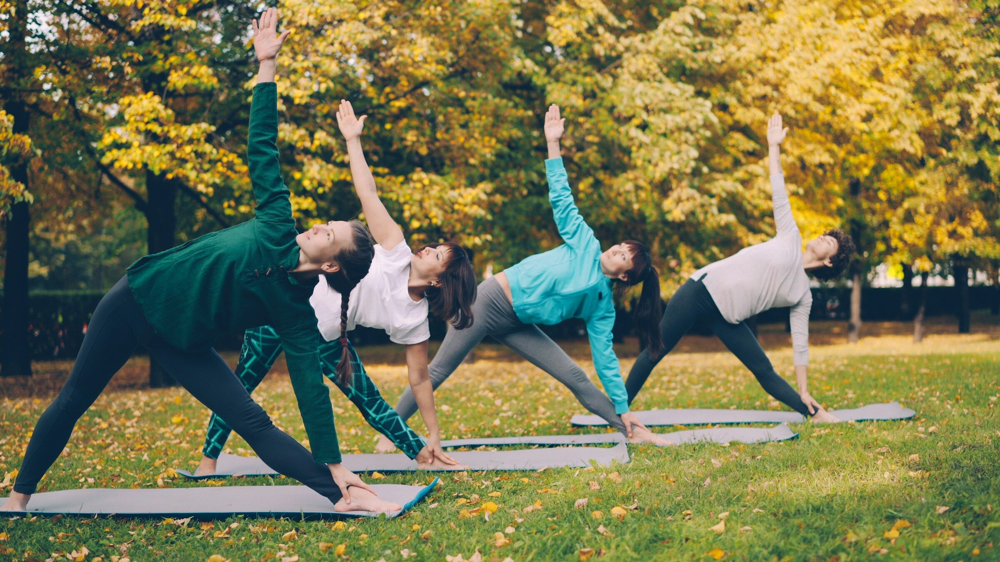
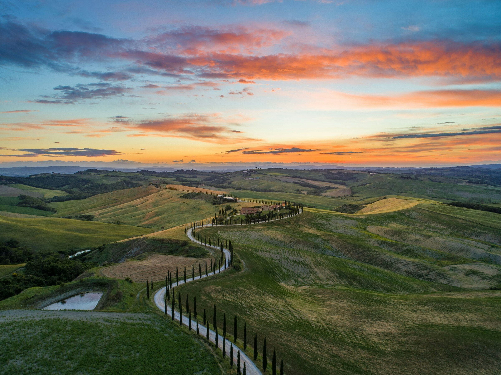

Wellness and Sustainable Offsites: How to Plan a Retreat That Recharges
How to plan a wellness-focused, lower-impact company retreat: venues, programme ideas, travel choices and local partners that make a real difference.

More and more teams want their retreat to leave people rested rather than exhausted, and to have a lighter footprint on the places they visit. The good news: wellness and sustainability often go together. Slower programmes, local food and nature-based activities are better for people and for the planet.
Designing for wellbeing
Leave real free time
The most common complaint after an offsite is "we never stopped". Protect at least two hours of free time per day.
Start the day gently
Offer an optional morning session: yoga, a run, a walk on the beach or a swim in the hotel's indoor pool.
Keep sessions short
Ninety minutes maximum, with breaks outside.
Feed people well
Fresh, local, seasonal food, with plenty of vegetarian options and alcohol-free choices at every meal.
Make evenings optional
Not everyone wants a late night. A good programme has a shared dinner and lets people choose what comes next.
Wellness activities that teams enjoy
- Sunrise yoga or mobility sessions.
- Guided forest or coastal walks.
- Breathwork or meditation with a teacher.
- Spa or thermal baths, as in Budapest or the Azores.
- Surf lessons (see our surf retreat guide).
- Cooking classes focused on local, seasonal produce.

Making the retreat more sustainable
Choose destinations close to your team
The biggest impact of any retreat is travel. A destination with direct flights from your hubs, or reachable by train, matters more than any other choice. Direct flights also mean less fatigue for everyone.
Stay longer, travel less
Three nights in one place is better than two nights split between two places.
Pick venues that care
Look for local ownership, renewable energy, water-saving measures, local sourcing and fair employment.
Use local partners
Local guides, chefs, artisans and family-run businesses keep the money in the community and make the experience more authentic.
Cut waste
No single-use plastics, digital programmes instead of printed packs, refillable bottles for everyone.
Give back
Add a half-day with a local project: a beach clean-up, tree planting, a farm visit. See our team-building activities.
Destinations for wellness retreats
- Madeira and the Azores: nature, hiking and mild weather.
- Tuscany: slow food and countryside villas.
- Crete: mountains, villages and the Mediterranean diet.
- Zakopane: mountain air and spas.
Plan a retreat that recharges
Talk to our expert and tell us what matters to your team. We'll send 3 proposals with calmer programmes, venues that care, and every participant's flight optimised for the shortest routes.
Frequently asked questions
What is a wellness retreat for companies?
A company retreat designed around wellbeing: calmer programmes, real free time, healthy food and activities such as yoga, hiking or spa time.
How can we make a company retreat more sustainable?
Choose a destination close to your team with direct flights, stay longer in one place, use local partners and venues with clear environmental practices, and cut waste.
Can a wellness retreat still include work sessions?
Yes. The best retreats combine focused sessions in the morning with wellbeing and free time in the afternoon.
Let's plan your team's next retreat
Venue, programme, activities and every participant's flight, handled by one team. It starts with a call with our expert.
Keep reading
All articles
Company Offsite Trends for 2027
The company offsite trends shaping 2027: purpose-led retreats, smaller and more frequent meetups, shoulder-season travel, local experiences and smarter budgets.

Leadership Retreat Agenda: A 3-Day Template
A proven 3-day leadership retreat agenda with session ideas, timings, facilitation tips and the right venue, for executive teams of 6 to 25 people.

25 Team-Building Activities Adults Actually Enjoy
Team-building activities that don't feel forced: outdoor adventures, food experiences, creative workshops and city games for company retreats of any size.